Lost Railway - кооперативный хоррор
Техлид проекта. Большая команда. Больше 100 000 вишлистов в Steam.
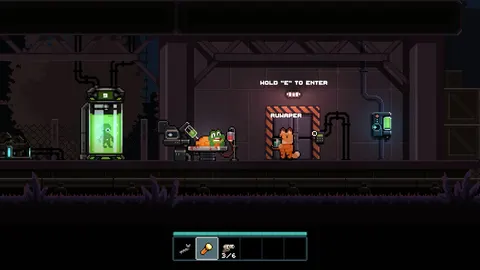
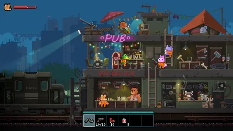
NDA 💀 Но можно глянуть трейлер и посмотреть страничку в Steam 😊
Техлид проекта. Большая команда. Больше 100 000 вишлистов в Steam.


NDA 💀 Но можно глянуть трейлер и посмотреть страничку в Steam 😊
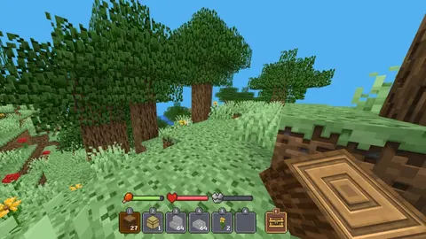
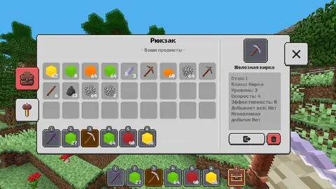
Изначально меня позвали на проект, чтобы помочь команде из трёх человек сделать разработку более эффективной. Разработка действительно стала эффективнее после моего прихода — всех троих пришлось уволить. Проект был завершён, вышел в свет, собрал метрики, пережил два пивота и, не найдя своей ниши, пал смертью храбрых. Тезисно: - Соло-разработка (это было тяжело). - Server-authoritative-архитектура на FishNet Networking с несколькими моими патчами. Один из них вмерджили в официальный репозиторий библиотеки нетворкинга. Клиентский код полностью отделён от серверного. У клиентов нет никакой возможности посмотреть серверные функции. - Серверы, способные выдержать 128 человек. Кастомный оркестратор серверов, бэкенд с кучей ММО-логики, Redis Streams как шина событий бэкенда для игровых серверов. - Экстремальные оптимизации стриминга мира, кастомный палитровый бит-паковый кодек вокселей чанков, самописный Area of Interest, клиентское предсказание сломанных блоков с реконсиляцией. - Реализация WebGL-клиента в iframe для моментальных обновлений без модерации Яндекса. Скаффолдинг для доставки билдов прямо из Unity в S3, где хранятся все билды, с возможностью отката и т. п. Что-то вроде мини-админки Яндекс Игр, только прямо в Unity. - Моя личная гордость — система мультиплеерного инвентаря, которую невозможно взломать и в которой невозможно надюпать предметы. Сервер никогда не доверяет клиенту — не только в инвентаре, но даже в мелочах вроде просмотра рекламы. При общении с сервером используются FNV-1a-хеш всего инвентаря и версия, а при рассинхроне — тикеты и FIFO с ребейзом; все операции атомарны. Точно так же реализована система трейдинга между игроками. - Тысячи мобов на одном сервере с оптимизациями и автоматическим переходом в спящий режим, когда поблизости нет игроков. - Примитивная процедурная генерация.
Техлид проекта для криптокоина $PEPEMEME с инвестициями $3млн. Руководил командой из 5 человек, набрал и обучил команду с нуля после ухода предыдущей.
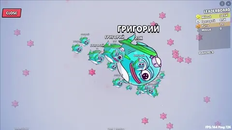
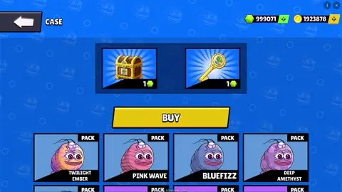
30к активных месячных пользователей, 2млн пользователей всего. Полностью реализован неткод на Mirror, матчмейкинг и автоматическая оркестрация билдов. Архитектура проекта позволила за 2 месяца собрать релизы на Android, iOS и Telegram.
Этот проект стал настоящим испытанием на прочность моих лидерских качеств. После ухода старой команды пришлось буквально восстанавливать проект с нуля: - Организовал архитектуру всего проекта с учётом мультиплатформенности - Написал половину бекенда на ASP.NET пока искали отдельного бекендера - Создал систему паттерновых скинов как в CS2 — каждый скин из кейса абсолютно уникален - Разработал телеграм-бота с рассылкой ежедневных сообщений на 2млн пользователей - Настроил полноценную аналитику и воронки перед закупкой трафика - Провёл десятки технических собеседований и прокачал двух сотрудников до мидл уровня Помимо разработки занимался всеми организационными процессами: составление роадмапы, подсчёт костов сервисов, настройка CI/CD, проведение созвонов и распределение задач.
Разработчик множества продуктов одного из самых революционных стартапов. Даже на канале Forbes его показывали! С помощью MegaMod было создано более 70 тыс. игр.
- Работа в прекрасной команде - Mixed-позиция: начиная от кор-механик, оптимизаций и шейдеров, заканчивая разработкой бекенда и CI/CD - Интенсивное использование мультиплеера Photon - Работа с WebGL - Оптимизация игры - Создание инструментов редактора - Добавление геймплейных фичей - Создание инфраструктуры для команды (телеграм-бот для ежедневных отчетов)
Proof-of-concept, который проверил меня на прочность. Игра была создана с нуля на языке C, без движка, без библиотек. Всё своё, всё handmade.
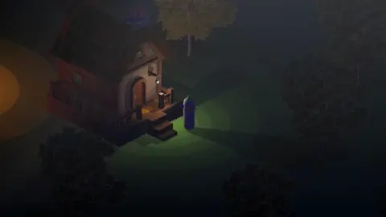
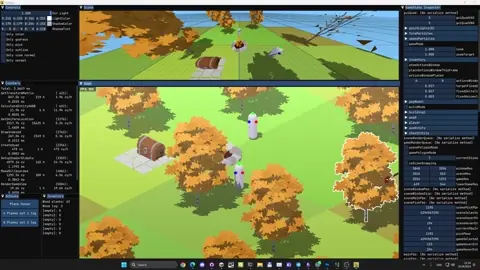
Каждый уважающий себя игровой разработчик должен хоть раз задуматься: а как написать свой движок? Каждый, не уважающий своё время игровой разработчик, должен попробовать его написать!
Это до сих пор остаётся одной из самых сложных вещей, что я делал. Встретиться с WinAPI лицом к лицу после .NET — это испытание не для всех. Всё началось как proof-of-concept одного пиксельного шейдера, а медленно переросло в создание своей игры на OpenGL. Каждая задача была для меня вызовом, потому что я никогда такого не делал, а ресурсов для midcore OpenGL программирования довольно мало. Захотелось, чтобы при клике мышкой по объекту он выделялся. Вроде бы тривиально, но, подождите, у нас даже нет 3D-пространства в игре. И вот так буквально с каждой задачей. Ну ладно, разобрались с матрицами линейных трансформаций, создали камеру, написали шейдер — можно рендерить. А куда рендерить? Чёрт! Продолжать можно бесконечно, этому я посвятил отдельный канал в телеграме. Из интересного: - Метапрограммы для рефлексии в коде. Это стало основной фичей редактора движка. - Возможность записывать состояние игры и ввод пользователя. И воспроизводить это бесконечно. В сочетании с динамической подгрузкой .dll с игровой логикой это позволяет редактировать код и сразу видеть, как он меняет поведение игры в реальном времени — без скриптовых языков! - Самописный импортёр .gltf файлов с текстурами и материалами. - Собственный динамический батчинг геометрии. - Система чанков, которые реже обновляются за пределами камеры. - Реализация Point Light с тенями. - Кастомный UI со своим батчингом и рендерингом текста. - Система партиклов с настройками как в Unity. - SIMD оптимизации.
Моё видение того, как должны выглядеть Obby-игры. Написана на низкоуровневом Playroom мультиплеере. Будет одной из игр, фичернутых в Discord. Всё ещё в разработке.
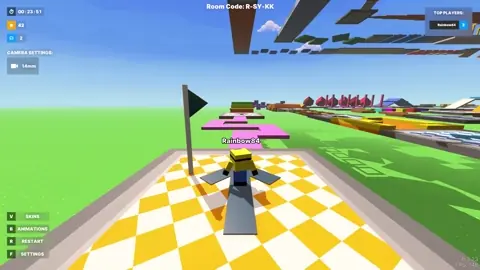
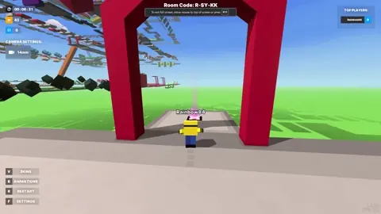
Из интересного: используется низкоуровневый мультиплеер. Вся синхронизация лежит на мне. Свои алгоритмы интерполяции, самописные метапрограммы для создания структур синхронизации, свой тикрейт. Благодаря партнёрству с Playroom, работаю с командой мультиплеера напрямую. Коммуникация на английском языке. Помогаю им чинить их же баги.
*Решением Верховного суда «международное движение ЛГБТ» признано экстремистским и запрещено в России.
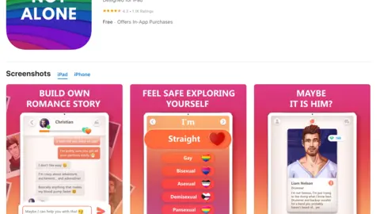
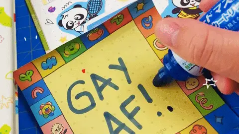
Некоторые вещи хочется забыть, но в портфолио же что-то нужно положить... 1.1 тыс. отзывов, всё-таки!
В далёком 2019 году мы начали разработку многообещающего проекта. На первых этапах я составлял 50% команды по количеству и 70% по массе в килограммах. Это был мой первый опыт работы с клиент-серверными приложениями, вебсокетами, REST и прочими штуками. Мне также поручили реализацию множества механик и UI-анимаций. Команда росла, я учился взаимодействовать с другими разработчиками и художниками, координировал работу команды и просто старался делать всё качественно. Хочу отметить: - Огромное количество аналитики (Amplitude). - Огромное количество рекламных офферов, их вариаций и A/B тестов.
Один из хедлайнеров компании, который я сделал за один марафон. Вы можете запрограммировать любой предмет обычными словами! Прямо на разговорном 'you know'.
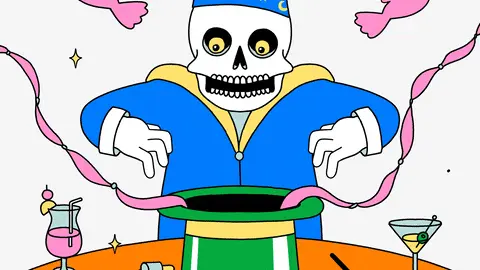
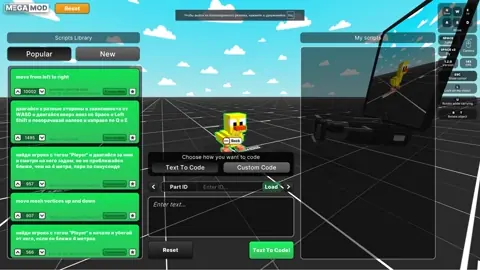
Босс постучался в мой роскошный кабинет и сказал: 'Гриша, спасай эту компанию, нам нужны инвестиции! Нам нужен продукт на стыке передовых технологий! И чтобы помещался в карман.' – Говно вопрос, Босс! Но, на самом деле, задача оказалась не такой уж тривиальной, ведь мне пришлось соединить Roslyn, AOT, CIL interpreter и ещё несколько умных слов так, чтобы всё это работало, да ещё и прямо в браузере! Я поднял небольшую базу данных для хранения сгенерированных нейросетью и придуманных пользователями скриптов, добавил возможность их оценки. А ещё сделали мобильную версию, где можно надиктовать геймобъекту, что ему нужно делать, просто голосом. В общем пришлось сильно подумать, но я справился. Ниже напишу как
как Ну, а если серьёзно, никакого роскошного кабинета у меня нет, и я под NDA. Этот прототип использовался на внутренних встречах CEO компании с уважаемыми людьми по всей территории Кремниевой Долины и не только. Сооснователь Mail.ru Дмитрий Гришин, продакт-менеджер Discord, ребята из OpenAI и ещё многие другие играли в эту игру и оценили её потенциал.
Она стоила нам целую шаурмечную!
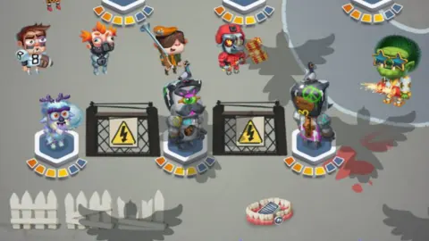
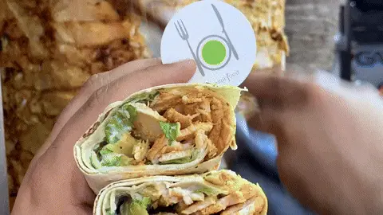
Один из моих самых любимых проектов, где я попробовал множество новых подходов к программированию. Он был многообещающим, но его ждала печальная судьба. Сначала у главного идеолога появились проблемы с его шаурмечной, из-за чего проект заморозили на несколько месяцев. А потом денег хватило ещё на месяц разработки, после чего пришлось перейти на дешёвых студентов, а я должен был решить: работать за будущие проценты или уйти в MegaMod за настоящие деньги.
Шаурмы не будет. Зато есть несколько интересных фактов: - Это первая игра, в которой я попробовал DOTS и сделал ультра-быстрый A* патфайндер. - Архитектура игры была построена так, чтобы каждая сущность могла иметь любые способности, поведенческие паттерны и использовать синергию эффектов. Можно буквально в один клик сделать, чтобы какой-нибудь забор стрелял фаерболлами, замедляющими других сущностей. А если они ещё в снег наступят — удачи им! - Я помогал находить на проект достойную, но дешёвую версию себя. Через меня прошло более 30 джуниоров. Дорогой HR, если ты читаешь это, держись! - Игра была реализована таким образом, чтобы максимально отделить представление от логики, а логику от текущего состояния. Это позволило делать deep save игры. При заходе в иру через неделю, она восстанавливает свое состояние вплоть до положения летящего снаряда где-то в воздухе. Из-за этого можно прерывать игровые сессии в любой момент и не бояться, что прогресс даже одного небольшого уровня будет утерян. - ИИ для мобов тупой как пробка, но в следующем проекте хочу уделить этому много внимания.
Мой первый крупный соло-проект и огромное количество технических вызовов.
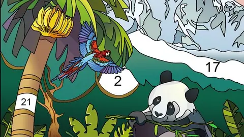
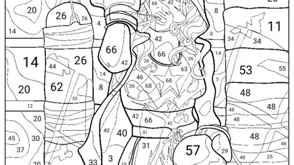
Казалось бы, что сложного — сделать обычную раскраску, где нужно выбрать цвет и ткнуть? Ну давайте подумаем...
Для начала нужно создать workflow для художников. Мы же не хотим, чтобы они тратили лишнее время на всякие мелочи. Поэтому я написал с нуля скрипт для Illustrator (до этого никогда не писал JS-скрипты, но долг зовёт), который нарезает изображения по слоям с цветовой кодировкой. Далее пришлось написать с нуля PSD-импортёр (пустяки, да?), который автоматически создаёт префаб раскраски с нужными слоями. Ой, погодите, нам же нужны номера цветов! Заставим художников тратить на это ещё пару часов? Нет, лучше напишем свой алгоритм для поиска геометрического центра любой формы! Но сначала узнаем, как это вообще работает. Круто, теперь мы генерируем даже номера цветов. Теперь настроим доставку контента! Вы знаете, как это делать? Я тоже нет! Но когда это нас останавливало? Изучаем AWS S3, CDN, Unity Addressables. Встраиваем рекламу и продаём на китайский рынок (я, конечно, не этого хотел, но да ладно). Это был проект, на котором я старался максимально использовать принципы SOLID/Clean Code. С тех пор я больше таких экспериментов не провожу и предпочитаю Data-Oriented подход к разработке.